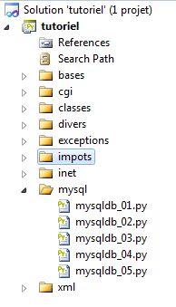
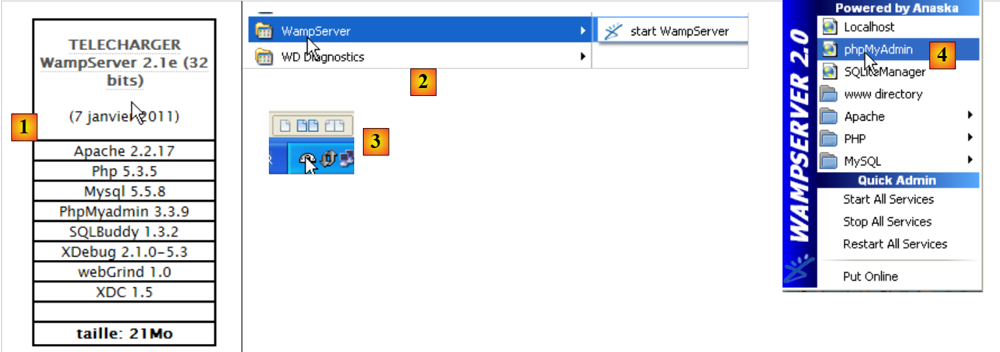
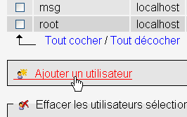
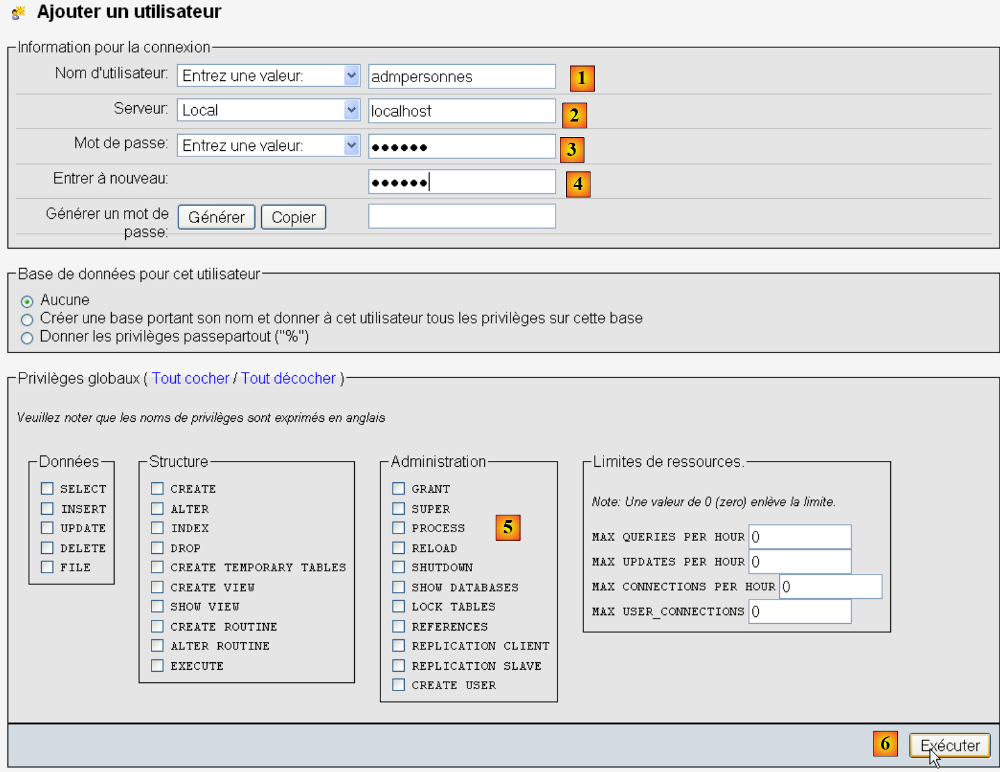
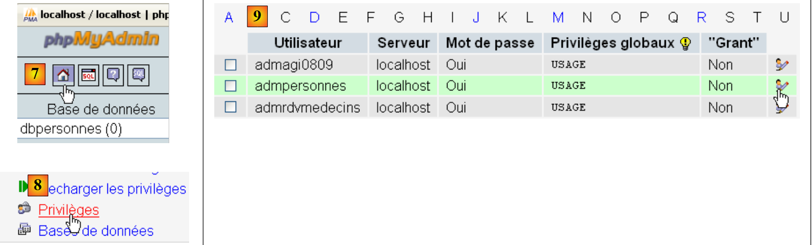
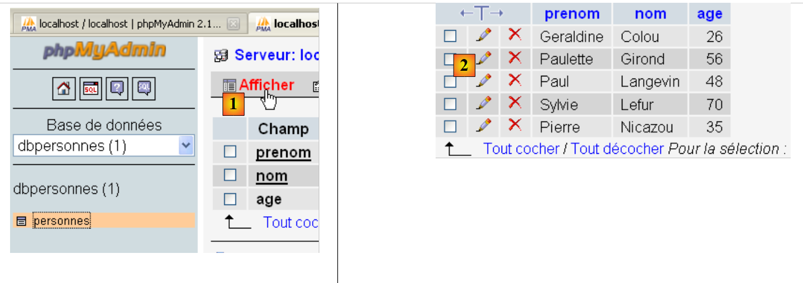

9. Utilisation du SGBD MySQL
 |
9.1. Intallation du module MySQLdb
Nous allons écrire des scripts utilisant une base de données MySQL :
 |
Les fonctions Python de gestion d'une base de données MySQL sont encapsulées dans un module MySQLdb qui n'est pas intégré à la distribution initiale de Python. Il faut alors procéder au téléchargement et à l'installation du module. Voici une façon de procéder :
 |
- dans le menu des programmes, prendre en [1] le gestionnaire de packages Python. La fenêtre de commandes [2] apparaît alors.
On recherche le mot clé mysql dans les packages :
C:\Documents and Settings\st>pypm search mysql
Get: [pypm-be.activestate.com] :repository-index:
Get: [pypm-free.activestate.com] :repository-index:
autosync: synced 2 repositories
chartio Setup wizard and connection client for connecting
chartio-setup Setup wizard and connection client for connecting
cns.recipe.zmysqlda Recipe for installing ZMySQLDA
collective.recipe.zmysqlda Recipe for installing ZMySQLDA
django-mysql-manager DESCRIPTION_DESCRIPTION_DESCRIPTION
jaraco.mysql MySQLDB-compatible MySQL wrapper by Jason R. Coomb
lovely.testlayers mysql, postgres nginx, memcached cassandra test la
mtstat-mysql MySQL Plugins for mtstat
mysql-autodoc Generate HTML documentation from a mysql database
mysql-python Python interface to MySQL
mysqldbda MySQL Database adapter
products.zmysqlda MySQL Zope2 adapter.
pymysql Pure Python MySQL Driver
pymysql-sa PyMySQL dialect for SQLAlchemy.
pymysql3 Pure Python MySQL Driver
sa-mysql-dt Alternative implementation of DateTime column for
schemaobject Iterate over a MySQL database schema as a Python o
schemasync A MySQL Schema Synchronization Utility
simplestore A datastore layer built on top of MySQL in Python.
sqlbean A auto maping ORM for MYSQL and can bind with memc
sqlwitch sqlwitch offers idiomatic SQL generation on top of
tiddlywebplugins.mysql MySQL-based store for tiddlyweb
tiddlywebplugins.mysql2 MySQL-based store for tiddlyweb
zest.recipe.mysql A Buildout recipe to setup a MySQL database.
Ont été listés tous les modules dont le nom ou la description ont le mot clé mysql. Celui qui nous intéresse est [mysql-python], liggne 14. Nous l'installons :
C:\Documents and Settings\st>pypm install mysql-python
The following packages will be installed into "%APPDATA%\Python" (2.7):
mysql-python-1.2.3
Hit: [pypm-free.activestate.com] mysql-python 1.2.3
Installing mysql-python-1.2.3
C:\Documents and Settings\st>echo %APPDATA%
C:\Documents and Settings\st\Application Data
- ligne 5 : le package mysql-python-1.2.3 a été installé dans le dossier "%APPDATA%\Python" où APPDATA est le dossier désigné ligne 8.
Cette opération peut échouer si :
- l'interpréteur Python utilisé est une version 64 bits ;
- le chemin %APPDATA% contient des caractères accentués.
9.2. Intallation de MySQL
Il existe diverses façons d'installer le SGBD MySQL. Ici nous avons utilisé WampServer, un package réunissant plusieurs logiciels :
- un serveur web Apache. Nous l'utiliserons pour l'écriture de scripts web en Python ;
- le SGBD MySQL ;
- le langage de script PHP ;
- un outil d'administration du SGBD MySQL écrit en PHP : phpMyAdmin.
WampServer peut être téléchargé (juin 2011) à l'adresse suivante :
 |
- en [1], on télécharge la version de WampServer qui va bien ;
- en [2], une fois installé, on le lance. Cela va lancer le serveur Web Apache et le SGBD MySQL ;
- en [3], une fois lancé, WampServer peut être administré à partir d'une icône [3] placée en bas à droite de la barre des tâches ;
- en [4], on lance l'outil d'administration de MySQL.
On crée une base de données [dbpersonnes] :

On crée un utilisateur [admpersonnes] avec le mot de passe [nobody] :
 |  |
 |
- en [1], le nom de l'utilisateur ;
- en [2], la machine du SGBD sur lequel on lui donne des droits ;
- en [3], son mot de passe [nobody] ;
- en [4], idem ;
- en [5], on ne donne aucun droit à cet utilisateur ;
- en [6], on le crée.
 |
- en [7], on revient sur la page d'accueil de phpMyAdmin ;
- en [8], on utilise le lien [Privileges] de cette page pour aller modifier ceux de l'utilisateur [admpersonnes] [9].
 |
- en [10], on indique qu'on veut donner à l'utilisateur [admpersonnes] des droits sur la base de données [dbpersonnes] ;
- en [11], on valide le choix.
 |
- avec le lien [12] [Tout cocher], on accorde à l'utilisateur [admpersonnes] tous les droits sur la base de données [dbpersonnes] [13] ;
- on valide en [14].
Désormais nous avons :
- une base de données MySQL [dbpersonnes] ;
- un utilisateur [admpersonnes / nobody] qui a tous les droits sur cette base de données.
Nous allons écrire des scripts Python pour exploiter la base de données.
9.3. Connexion à une base MySQL - 1
# import du module MySQLdb
import sys
sys.path.append("D:\Programs\ActivePython\site-packages")
import MySQLdb
# connexion à une base MySQL
....
Notes :
- lignes 2-4 : les scripts contenant des opérations avec le SGBD MySQL doivent importer le module MySQLdb. On se souvient que nous avons installé ce module dans le dossier [%APPDATA%\Python]. Le dossier [%APPDATA%\Python] est automatiquement exploré lorsqu'un code Python réclame un module. En fait ce sont tous les dossiers déclarés dans sys.path qui sont explorés. Voici un exemple qui affiche ces dossiers :
# -*- coding=utf-8 -*-
import sys
# affichage des dossiers de sys.path
for dossier in sys.path:
print dossier
L'affichage écran est le suivant :
Ligne 8, le dossier [site-packages] où MySQLdb avait été installé initialement. Nous déplaçons le dossier [site-packages] qui est le dossier où l'utilitaire pypm installe les modules Python. Pour ajouter un nouveau dossier que Python explorera à la recherche des modules, on l'ajoute à la liste sys.path :
# import du module MySQLdb
import sys
sys.path.append("D:\Programs\ActivePython\site-packages")
import MySQLdb
# connexion à une base MySQL
....
Ligne 3, on ajoute le dossier où a été déplacé le module MySQLdb.
Le code complet de l'exemple est le suivant :
# import du module MySQLdb
import sys
sys.path.append("D:\Programs\ActivePython\site-packages")
import MySQLdb
# connexion à une base MySQL
# l'identité de l'utilisateur est (admpersonnes,nobody)
user="admpersonnes"
pwd="nobody"
host="localhost"
connexion=None
try:
print "connexion..."
# connexion
connexion=MySQLdb.connect(host=host,user=user,passwd=pwd)
# suivi
print "Connexion a MySQL reussie sous l'identite host={0},user={1},passwd={2}".format(host,user,pwd)
except MySQLdb.OperationalError,message:
print "Erreur : {0}".format(message)
finally:
try:
connexion.close()
except:
pass
- lignes 8-11 : le script va connecter (ligne 15) l'utilisateur [admpersonnes / nobody] au SGBD MySQL de la machine [localhost]. On ne le connecte pas à une base de données précise ;
- lignes 12-24 : la connexion peut échouer. Aussi la fait-on dans un try / except / finally ;
- ligne 15 : la méthode connect du module MySQLdb admet différents paramètres nommés :
- user : utilisateur propriétaire de la connexion [admpersonnes] ;
- pwd : mot de passe de l'utilisateur [nobody] ;
- host : machine du sgbd MySQL [localhost] ;
- db : la base de données à laquelle on se connecte. Optionnel.
- ligne 18 : si une exception est lancée, elle est de type [ MySQLdb.OperationalError] et le message d'erreur associé sera trouvé dans la variable [message] ;
- lignes 20-23 : dans la clause [finally], on ferme la connexion. En cas d'exception, on l'intercepte (ligne 23) mais on ne fait rien avec (ligne 24).
connexion...
Connexion a MySQL reussie sous l'identite host=localhost,user=admpersonnes,passwd=nobody
9.4. Connexion à une base MySQL - 2
# import du module MySQLdb
import sys
sys.path.append("D:\Programs\ActivePython\site-packages")
import MySQLdb
# ---------------------------------------------------------------------------------
def testeConnexion(hote,login,pwd):
# connecte puis déconnecte (login,pwd) du sgbd mysql du serveur hote
# lance l'eception MySQLdb.operationalError
# connexion
connexion=MySQLdb.connect(host=hote,user=login,passwd=pwd)
print "Connexion a MySQL reussie sous l'identite (%s,%s,%s)" % (hote,login,passwd)
# on ferme la connexion
connexion.close()
print "Fermeture connexion MySQL reussie\n"
# ---------------------------------------------- main
# connexion à la base MySQL
# l'identité de l'utilisateur
user="admpersonnes"
passwd="nobody"
host="localhost"
# test connexion
try:
testeConnexion(host,user,passwd)
except MySQLdb.OperationalError,message:
print message
# avec un utilisateur inexistant
try:
testeConnexion(host,"xx","xx")
except MySQLdb.OperationalError,message:
print message
Notes :
- lignes 7-15 : une fonction qui tente de connecter puis de déconnecter un utilisateur à un SGBD MySQL. Affiche le résultat ;
- lignes 18-34 : programme principal – appelle deux fois la méthode testeConnexion et affiche les éventuelles exceptions.
9.5. Création d'une table MySQL
Maintenant qu'on sait créer une connexion avec un SGBD MySQL, on commence à émettre des ordres SQL sur cette connexion. Pour cela, nous allons nous connecter à la base créée [dbpersonnes] et utiliser la connexion pour créer une table dans la base.
# import du module MySQLdb
import sys
sys.path.append("D:\Programs\ActivePython\site-packages")
import MySQLdb
# ---------------------------------------------------------------------------------
def executeSQL(connexion,update):
# exécute une requête update de mise à jour sur la connexion
# on demande un curseur
curseur=connexion.cursor()
# exécute la requête sql sur la connexion
try:
curseur.execute(update)
connexion.commit()
except Exception, erreur:
connexion.rollback()
raise
finally:
curseur.close()
# ---------------------------------------------- main
# connexion à la base MySQL
# l'identité de l'utilisateur
ID="admpersonnes"
PWD="nobody"
# la machine hôte du sgbd
HOTE="localhost"
# identité de la base
BASE="dbpersonnes"
# connexion
try:
connexion=MySQLdb.connect(host=HOTE,user=ID,passwd=PWD,db=BASE)
except MySQLdb.OperationalError,message:
print message
sys.exit()
# suppression de la table personnes si elle existe
# si elle n'existe pas une erreur se produira
# on l'ignore
requete="drop table personnes"
try:
executeSQL(connexion,requete)
except:
pass
# création de la table personnes
requete="create table personnes (prenom varchar(30) NOT NULL, nom varchar(30) NOT NULL, age integer NOT NULL, primary key(nom,prenom))"
try:
executeSQL(connexion,requete)
except MySQLdb.OperationalError,message:
print message
sys.exit()
# on se deconnecte et on quitte
try:
connexion.close()
except MySQLdb.OperationalError,message:
print message
sys.exit()
Notes :
- ligne 7 : la fonction executeSQL exécute une requête SQL sur une connexion ouverte ;
- ligne 10 : les opérations SQL sur la connexion se font au travers d'un objet particulier appelé curseur ;
- ligne 10 : obtention d'un curseur ;
- ligne 13 : exécution de la requête SQL ;
- ligne 14 : la transaction courante est validée ;
- ligne 15 : en cas d'exception, le message d'erreur est récupéré dans la variable erreur ;
- ligne 16 : la transaction courante est invalidée ;
- ligne 17 : l'exception est relancée ;
- ligne 19 : qu'il y ait erreur ou non, le curseur est fermé. Cela libère les ressources qui lui sont asociées.
create table personnes (prenom varchar(30) NOT NULL, nom varchar(30) NOT NULL, age integer NOT NULL, primary key(nom,prenom)) : requete reussie
Vérification avec phpMyAdmin :
 |
- la base de données [dbpersonnes] [1] a une table [personnes] [2] qui a la structure [3] et la clé primaire [4].
9.6. Remplissage de la table [personnes]
Après avoir créé précédemment la table [personnes], maintenant nous la remplissons.
# import du module MySQLdb
import sys
sys.path.append("D:\Programs\ActivePython\site-packages")
import MySQLdb
# autres modules
import re
# ---------------------------------------------------------------------------------
def executerCommandes(HOTE,ID,PWD,BASE,SQL,suivi=False,arret=True):
# utilise la connexion (HOTE,ID,PWD,BASE)
# exécute sur cette connexion les commandes SQL contenues dans le fichier texte SQL
# ce fichier est un fichier de commandes SQL à exécuter à raison d'une par ligne
# si suivi=True alors chaque exécution d'un ordre SQL fait l'objet d'un affichage indiquant sa réussite ou son échec
# si arret=True, la fonction s'arrête sur la 1ère erreur rencontrée sinon elle exécute ttes les commandes sql
# la fonction rend une liste (nb d'erreurs, erreur1, erreur2, ...)
# on vérifie la présence du fichier SQL
data=None
try:
data=open(SQL,"r")
except:
return [1,"Le fichier %s n'existe pas" % (SQL)]
# connexion
try:
connexion=MySQLdb.connect(host=HOTE,user=ID,passwd=PWD,db=BASE)
except MySQLdb.OperationalError,erreur:
return [1,"Erreur lors de la connexion a MySQL sous l'identite (%s,%s,%s,%s) : %s" % (HOTE, ID, PWD, BASE, erreur)]
# on demande un curseur
curseur=connexion.cursor()
# exécution des requêtes SQL contenues dans le fichier SQL
# on les met dans un tableau
requetes=data.readlines()
# on les exécute une à une - au départ pas d'erreurs
erreurs=[0]
for i in range(len(requetes)):
# on mémorise la requête courante
requete=requetes[i]
# a-t-on une requête vide ? Si oui, on passe à la requête suivante
if re.match(r"^\s*$",requete):
continue
# exécution de la requête i
erreur=""
try:
curseur.execute(requete)
except Exception, erreur:
pass
#y-a-t-il eu une erreur ?
if erreur:
# une erreur de plus
erreurs[0]+=1
# msg d'erreur
msg="%s : Erreur (%s)" % (requete,erreur)
erreurs.append(msg)
# suivi écran ou non ?
if suivi:
print msg
# on s'arrête ?
if arret:
return erreurs
else:
if suivi:
print "%s : Execution reussie" % (requete)
# fermeture connexion et libération des ressources
curseur.close()
connexion.commit()
# on se deconnecte
try:
connexion.close()
except MySQLdb.OperationalError,erreur:
# une erreur de plus
erreurs[0]+=1
# msg d'erreur
msg="%s : Erreur (%s)" % (requete,erreur)
erreurs.append(msg)
# retour
return erreurs
# ---------------------------------------------- main
# connexion à la base MySQL
# l'identité de l'utilisateur
ID="admpersonnes"
PWD="nobody"
# la machine hôte du sgbd
HOTE="localhost"
# identité de la base
BASE="dbpersonnes"
# identité du fichier texte des commandes SQL à exécuter
TEXTE="sql.txt";
# création et remplissage de la table
erreurs=executerCommandes(HOTE,ID,PWD,BASE,TEXTE,True,False)
#affichage nombre d'erreurs
print "il y a eu %s erreur(s)" % (erreurs[0])
for i in range(1,len(erreurs)):
print erreurs[i]
Le fichier sql.txt :
Une erreur a été volontairement insérée en ligne 5.
Les résultats écran :
drop table personnes : Execution reussie
create table personnes (prenom varchar(30) not null, nom varchar(30) not null, age integer not null, primary key (nom,prenom)) : Execution reussie
insert into personnes values('Paul','Langevin',48) : Execution reussie
insert into personnes values ('Sylvie','Lefur',70) : Execution reussie
xx : Erreur ((1064, "You have an error in your SQL syntax; check the manual that corresponds to your MySQL server version for the right syntax to use near 'xx' at
line 1"))
insert into personnes values ('Pierre','Nicazou',35) : Execution reussie
insert into personnes values ('Geraldine','Colou',26) : Execution reussie
insert into personnes values ('Paulette','Girond',56) : Execution reussie
il y a eu 1 erreur(s)
xx : Erreur ((1064, "You have an error in your SQL syntax; check the manual that corresponds to your MySQL server version for the right syntax to use near 'xx' at line 1"))
Vérification avec phpMyAdmin :

- en [1], le lien [Afficher] permet d'avoir le contenu de la table [personnes] [2].
9.7. Exécution de requêtes SQL quelconques
Le script suivant permet d'exécuter un fichier de commandes SQL et d'afficher le résultat de chacune d'elles :
- le résultat du SELECT si l'ordre est un SELECT ;
- le nombre de lignes modifiées si l'ordre est INSERT, UPDATE, DELETE.
# import du module MySQLdb
import sys
sys.path.append("D:\Programs\ActivePython\site-packages")
import MySQLdb
# autres modules
import re
def cutNewLineChar(ligne):
# on supprime la marque de fin de ligne de [ligne] si elle existe
l=len(ligne)
while(ligne[l-1]=="\n" or ligne[l-1]=="\r"):
l-=1
return(ligne[0:l])
# ---------------------------------------------------------------------------------
def afficherInfos(curseur):
# affiche le résultat d'une requête sql
# s'agissait-il d'un select ?
if curseur.description:
# il y a une description - donc c'est un select
# description[i] est la description de la colonne n° i du select
# description[i][0] est le nom de la colonne n° i du select
# on affiche les noms des champs
titre=""
for i in range(len(curseur.description)):
titre+=curseur.description[i][0]+","
# on affiche la liste des champs sans la virgule de fin
print titre[0:len(titre)-1]
# ligne séparatrice
print "-"*(len(titre)-1)
# ligne courante du select
ligne=curseur.fetchone()
while ligne:
print ligne
# ligne suivante du select
ligne=curseur.fetchone()
else:
# il n'y a pas de champs - ce n'était pas un select
print "%s lignes(s) a (ont) ete modifiee(s)" % (curseur.rowcount)
# ---------------------------------------------------------------------------------
def executerCommandes(HOTE,ID,PWD,BASE,SQL,suivi=False,arret=True):
# utilise la connexion (HOTE,ID,PWD,BASE)
# exécute sur cette connexion les commandes SQL contenues dans le fichier texte SQL
# ce fichier est un fichier de commandes SQL à exécuter à raison d'une par ligne
# si suivi=1 alors chaque exécution d'un ordre SQL fait l'objet d'un affichage indiquant sa réussite ou son échec
# si arret=1, la fonction s'arrête sur la 1ère erreur rencontrée sinon elle exécute ttes les commandes sql
# la fonction rend un tableau (nb d'erreurs, erreur1, erreur2, ...)
# on vérifie la présence du fichier SQL
data=None
try:
data=open(SQL,"r")
except:
return [1,"Le fichier %s n'existe pas" % (SQL)]
# connexion
try:
connexion=MySQLdb.connect(host=HOTE,user=ID,passwd=PWD,db=BASE)
except MySQLdb.OperationalError,erreur:
return [1,"Erreur lors de la connexion a MySQL sous l'identite (%s,%s,%s,%s) : %s" % (HOTE, ID, PWD, BASE, erreur)]
# on demande un curseur
curseur=connexion.cursor()
# exécution des requêtes SQL contenues dans le fichier SQL
# on les met dans un tableau
requetes=data.readlines()
# on les exécute une à une - au départ pas d'erreurs
erreurs=[0]
for i in range(len(requetes)):
# on mémorise la requête courante
requete=requetes[i]
# a-t-on une requête vide ? Si oui, on passe à la requête suivante
if re.match(r"^\s*$",requete):
continue
# exécution de la requête i
erreur=""
try:
curseur.execute(requete)
except Exception, erreur:
pass
#y-a-t-il eu une erreur ?
if erreur:
# une erreur de plus
erreurs[0]+=1
# msg d'erreur
msg="%s : Erreur (%s)" % (requete,erreur)
erreurs.append(msg)
# suivi écran ou non ?
if suivi:
print msg
# on s'arrête ?
if arret:
return erreurs
else:
if suivi:
print "%s : Execution reussie" % (requete)
# infos sur le résultat de la requête exécutée
afficherInfos(curseur)
# fermeture connexion et libération des ressources
curseur.close()
connexion.commit()
# on se deconnecte
try:
connexion.close()
except MySQLdb.OperationalError,erreur:
# une erreur de plus
erreurs[0]+=1
# msg d'erreur
msg="%s : Erreur (%s)" % (requete,erreur)
erreurs.append(msg)
# retour
return erreurs
# ---------------------------------------------- main
# connexion à la base MySQL
# l'identité de l'utilisateur
ID="admpersonnes"
PWD="nobody"
# la machine hôte du sgbd
HOTE="localhost"
# identité de la base
BASE="dbpersonnes"
# identité du fichier texte des commandes SQL à exécuter
TEXTE="sql2.txt"
# création et remplissage de la table
erreurs=executerCommandes(HOTE,ID,PWD,BASE,TEXTE,True,False)
#affichage nombre d'erreurs
print "il y a eu %s erreur(s)" % (erreurs[0])
for i in range(1,len(erreurs)):
print erreurs[i]
Notes :
- la nouveauté est ligne 100 du script : après exécution d'un ordre SQL, on demande des informations sur le curseur utilisé par cette requête. Ces informations sont données par la fonction afficheInfos des lignes 16-40 ;
- lignes 19 et 39 : si la requête SQL exécutée était un SELECT, l'attribut [curseur.description] est un tableau dont l'élément n° i décrit le champ n° i du résultat du SELECT. Sinon, l'attribut [curseur.rowcount] (ligne 39) est le nombre de lignes modifiées par la requête INSERT, UPDATE ou DELETE ;
- lignes 32 et 36 : la méthode [curseur.fetchone] permet de récupérer la ligne courante du SELECT. Il existe une méthode [curseur.fetchall] qui permet de les récupérer d'un seul coup.
Le fichier des requêtes exécutées :
Les résultats écran :
Vérification PhpMyadmin :
 |